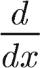

A Tutor's Guide to Calculus
For educational purposes only.
Formula graphics made with the
TeX equation editor
.
Home
Understanding
Derivatives & Integrals

Solving Derivatives
Derivative Rules
Solving Integrals
(Antiderivatives)